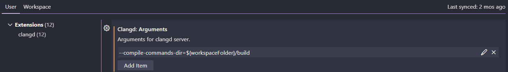
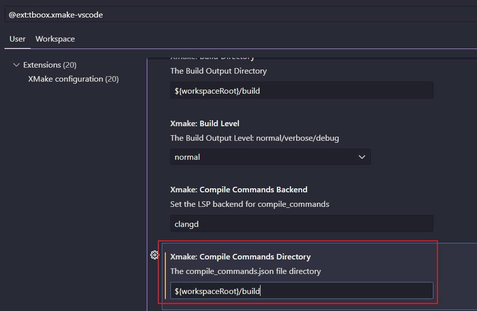
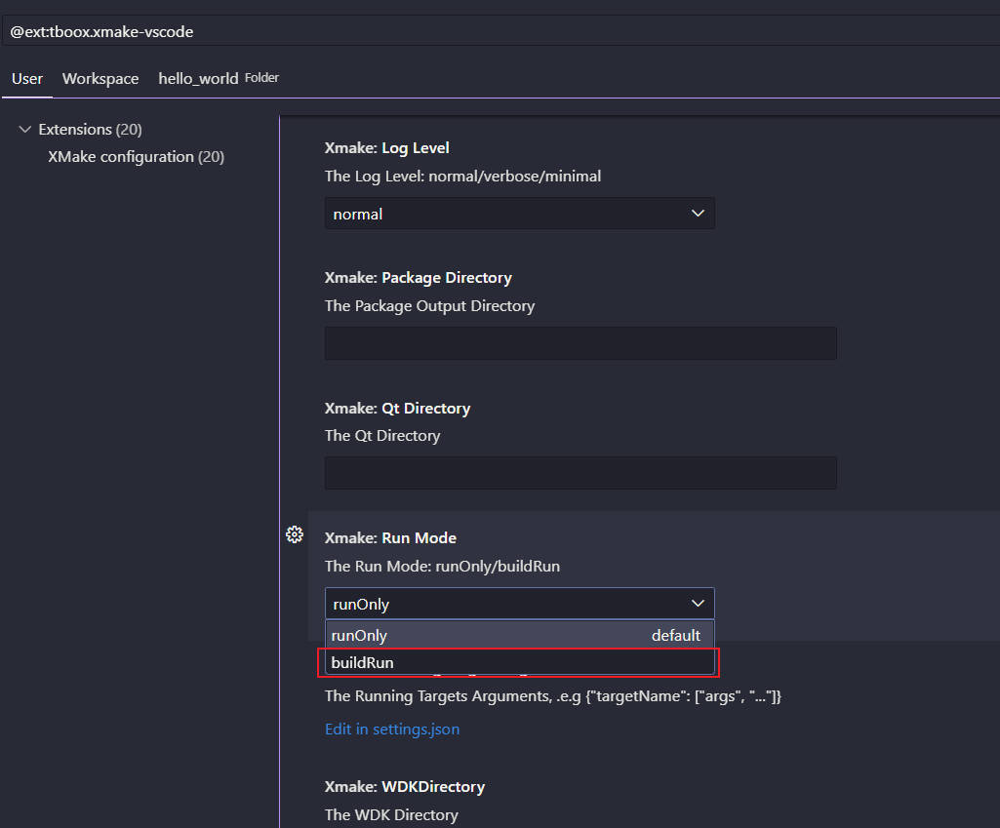

xmake
Table of Contents
xmake note.
<!– more –>
xmake
Install
安装 Windows 版本
使用安装包
windows 下提供了预制的 nsis 安装包，我们可直接从 github 的 Releases 下载页面下载后，运行安装包即可。
从 Releases 上下载 windows 安装包 https://github.com/xmake-io/xmake/releases
运行安装程序 xmake-[version].exe, 如 xmake-master.win64.exe
vscode c/c++ 开发环境搭建
安装如下 vscode 插件：
| XMake | tboox | Extended XMake support in Visual Studio Code |
| C/C++ | Microsoft | C/C++ IntelliSense, debugging, and code browsing. |
| clangd | LLVM | C/C++ completion, navigation, and insights |
clangd 的代码补全基于一个叫做 compile_commands.json 的文件，我们首先告诉 clangd 去 build 目录下找。打开 clangd 设置，添加以下命令：
–compile-commands-dir=${workspaceFolder}/build

xmake 可以生成 compile_commands.json，但是其默认是将这个文件生成在.vscode 文件夹下，因此需要改一下 xmake 的设置，让它生成到 build 目录下:

xmake 中 run 默认不会执行编译，进行如下配置，可使 run 时执行 build：

当 xmake.lua 文件发生修改时，就会自动在 build 目录下生成 compile_commands.json，到此所有的配置就完成了。
如果没有自动生成 compile_commands.json，我们可以在 vscode 中使用 >XMake: UpdateIntellisense 命令手动触发生成，或者在命令行中输入以下命令来生成。
xmake project -k compile_commands build
Base Usage
创建工程
方法 1：手动创建
- 创建工程目录
# 创建目录 mkdir hello_world cd hello_world
- 创建 xmake.lua 文件
-- 创建 xmake.lua 文件, 使用下面内容填充
add_rules("mode.debug", "mode.release")
target("hello_world")
set_kind("binary")
add_files("src/*.cpp")
- 自动配置工程
# 自动配置工程 xmake f # 或者 xmake config # 查看工程配置, 如果没有配置工程，则自动配置工程 xmake f -v # 或者xmake config -v
方法 2：命令行
xmake create hello_world # 上面命令生成如下目录结构和文件： # hello_world # src/ # main.cpp # .gitignore # xmake.lua
工程配置
# 自动配置工程 xmake f # 或者 xmake config # 查看工程配置, 如果没有配置工程，则自动配置工程 xmake f -v # 配置platform architecture mode xmake f -p [windows|linux|macosx|android|iphoneos ..] -a [x86|arm64 ..] -m [debug|release] # 配置 vs版本 xmake f --vs=2022
C++包管理
查找 package
# 查找 vulkan package ## 可以看到 vulkansdk 是我们需要的package xrepo search vulkan # The package names: # vulkan: # -> vulkansdk: LunarG Vulkan® SDK (in xmake-repo) # -> volk-1.3.275+0: volk is a meta-loader for Vulkan (in xmake-repo) # -> glfw-3.4: GLFW is an Open Source, multi-platform library for OpenGL, OpenGL ES and Vulkan application development. (in xmake-repo) # .......
查询 package 信息
# 查询 vulkansdk package 信息 xrepo info vulkansdk # 下面的 configs 字段表示可以配置的信息 # The package info of project: # require(vulkansdk): # -> description: LunarG Vulkan® SDK # -> version: latest # -> repo: xmake-repo https://gitee.com/tboox/xmake-repo.git master # -> cachedir: C:\Users\wolfand11\AppData\Local\.xmake\cache\packages\2404\v\vulkansdk\latest # -> installdir: C:\Users\wolfand11\AppData\Local\.xmake\packages\v\vulkansdk\latest\46c06c99027e4154b6f020db58363b1d # -> searchdirs: # -> searchnames: # -> fetchinfo: latest # -> platforms: all # -> requires: # -> plat: windows # -> arch: x64 # -> configs: #可以配置的信息 # -> utils: table: 0000017A6478ECB0 # -> runtimes: MT # -> shared: true # -> pic: true # -> debug: false # -> configs: #可以配置的信息 # -> shared: Build shared library. (default: true) (readonly) # -> utils: Enabled vulkan utilities. (default: table: 0000017A6478ECB0) # -> configs (builtin): #可以配置的信息 # -> debug: Enable debug symbols. (default: false) # -> pic: Enable the position independent code. (default: true) # -> lto: Enable the link-time build optimization. (type: boolean) # -> asan: Enable the address sanitizer. (type: boolean) # ......
版本设置
add_requires("tbox 1.6.*", "pcre 1.3.x", "libpng ^1.18")
add_requires("libpng ~1.16", "zlib 1.1.2 || >=1.2.11 <1.3.0")
在 Vulkan Tutorial 中添加如下设置，会报错。目前版本设置还没摸清楚。
add_requires("glfw > 3.27.0")
删除包
使用 xrepo remove vulkansdk
编译运行
方法 1：VSCode 中直接操作
VSCode 中直接操作
方法 2：生成 VS 工程来操作
# 配置 vs版本 xmake f --vs=2022 # 参数-a x64就是生成pc 64位架构vs项目，如果输入-a x86则生成x86架构vs项目 xmake project -k vsxmake -a x64
- Window11 下使用 Xmake 构建 VS2022 sln 项目工程，并进行调试 https://zhuanlan.zhihu.com/p/576298652
方法 3：命令行中操作
# 编译 xmake build 09Multisampling # 运行 xmake run 09Multisampling
调试
方法 1：VSCode 和 VS 工程中操作
方法 2：命令行中操作
# 切换到debug模式 xmake config -m debug # 重新编译 xmake build 09Multisampling # 运行 xmake run 09Multisampling
Vulkan Tutorial 配置
以 Vulkan Tutorial - Development environment 为例进行说明，Vulkan Tutorial - Development environment
add_rules("mode.debug", "mode.release")
rule("vulkan_tutorial")
print(os.projectdir())
if is_plat("windows") then
--add_defines("ENGINE_ROOT_DIR=\"" .. (os.projectdir():gsub("\\", "\\\\")) .. "\\\\engine\"")
print("platform is windows")
else
print("platform is others")
--add_defines("ENGINE_ROOT_DIR=\"" .. (os.projectdir():gsub("\\", "/")) .. "/engine\"")
end
before_run(function (target)
print("[shader] glsl to spirv..")
import("utils")
local vulkan_sdk = find_package("vulkansdk") --定位到vulkansdk的路径
local glslang_validator_dir = vulkan_sdk["bindir"].."\\glslangValidator.exe" --获取到glslangValidator.exe的路径
-- 遍历 shader 文件
local targetName = target:name()
for _, shader_path in ipairs(os.files("$(projectdir)/"..targetName.."/**")) do
if utils.StrEndWith(shader_path, ".vert") or utils.StrEndWith(shader_path, ".frag") then
local new_shader_path = string.gsub(shader_path, ".vert", ".spv")
new_shader_path = string.gsub(new_shader_path, ".frag", ".spv")
os.runv(glslang_validator_dir,{"-V", shader_path,"-o", new_shader_path}) --执行系统命令
print("[shader] done: "..shader_path)
end
end
end)
rule_end()
-- add_requires("vulkansdk", {debug=true})
-- add_requires("vulkansdk > 1.3.0", {debug=true})
set_languages("c++20")
add_requires("vulkansdk")
add_requires("glm")
add_requires("glfw")
add_requires("stb")
add_requires("tinyobjloader")
local targetName = "01DevelopmentEnvironment"
target(targetName)
set_kind("binary")
add_files(targetName .. "/*.cpp")
add_packages("vulkansdk", "glm", "glfw")
targetName = "02DrawATriangle"
target(targetName)
set_kind("binary")
add_files(targetName .. "/*.cpp")
-- 设置 build output directory
--set_targetdir("../build/"..targetName)
-- 设置 run directory (也就是工作目录)
set_rundir("$(projectdir)/"..targetName)
add_packages("vulkansdk", "glm", "glfw")
add_rules("vulkan_tutorial")
set_default(true)
targetName = "09Multisampling"
target(targetName)
set_kind("binary")
add_files(targetName .. "/*.cpp")
-- 设置 build output directory
--set_targetdir("../build/"..targetName)
-- 设置 run directory (也就是工作目录)
set_rundir("$(projectdir)/"..targetName)
add_packages("vulkansdk", "glm", "glfw", "stb", "tinyobjloader")
add_rules("vulkan_tutorial")
Q&A
how can i get target name in add_files
target("kth-largest-element-in-an-array")
set_kind("binary")
add_files("kth-largest-element-in-an-array.cpp")
-- 下面配置和上面配置等价
local name = "kth-largest-element-in-an-array"
target(name)
set_kind("binary")
add_files(name .. ".cpp")
参考资料
- 官网 https://xmake.io/#/zh-cn/guide/installation
- xmake github https://github.com/xmake-io/
- xmake-vscode github https://github.com/xmake-io/xmake-vscode
- xmake 教程 https://www.zhihu.com/column/c_1684334361686712320